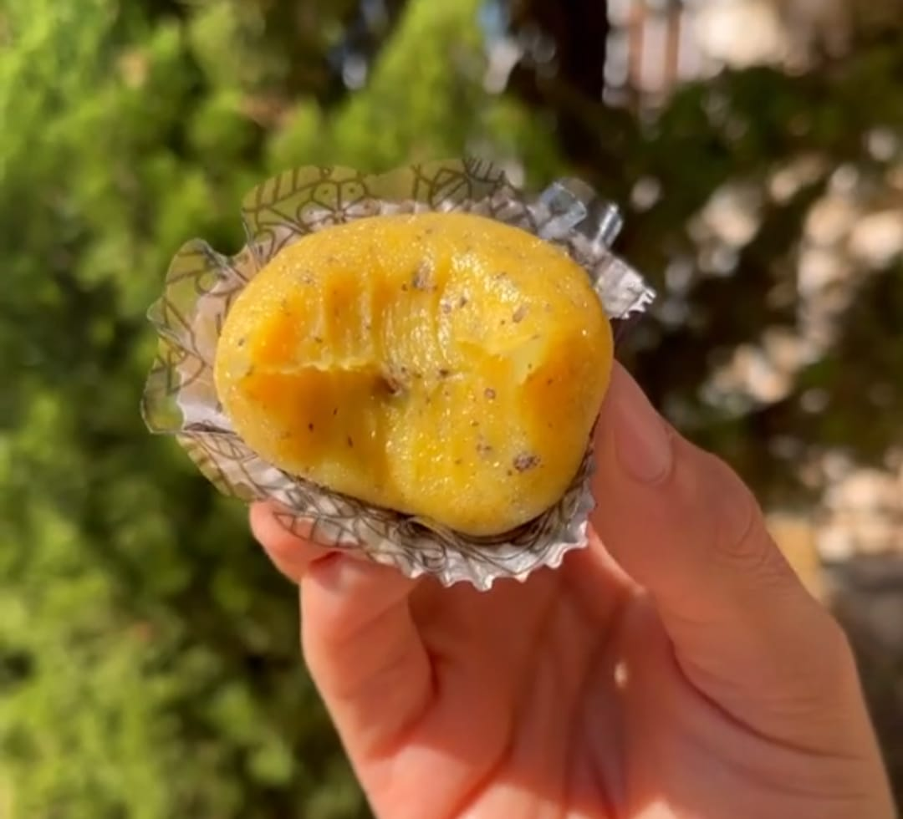
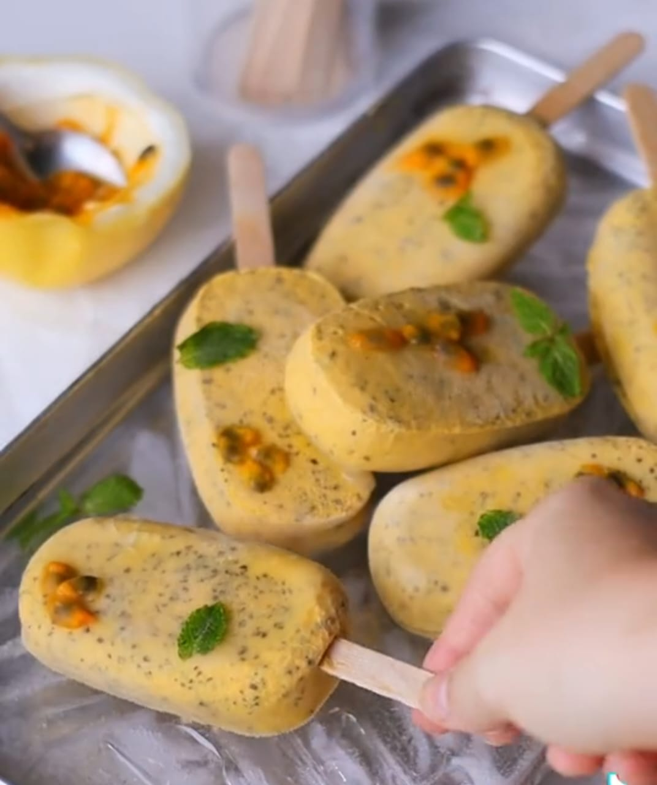

1 - Maracujá-amarelo (ou Passiflora edulis)
Popular no Brasil e no mundo, o maracujá-amarelo é a variação mais conhecida de todos os tipos da fruta. Ele é redondo, tipicamente azedo e, graças ao seu sabor, costuma ser usado em receitas de doces, sorvetes, geleias e sucos. Além disso, possui propriedades medicinais que são conhecidas por terem uma característica marcante em todas as variações da fruta: o clássico efeito calmante do maracujá. E, embora seja bastante famoso por isso, a fruta cítrica também é rica em antioxidantes, fibras, vitamina A e minerais, como cálcio, ferro e magnésio. |
 |
2 - Maracujá-roxo
 |
Conhecido pela cor da sua casca, o maracujá-roxo é uma variação menor que o amarelo e não possui tanta acidez quanto o tipo mais comum que nós conhecemos. Embora tenha se tornado popular em alguns países europeus, como na Holanda e na Bélgica, a fruta costuma ser cultivada em locais de clima subtropical, como no Sul do Brasil. Vale ressaltar também que a casca roxa não é a sua principal característica: além de ser consumido in natura (diferente de outras variações), o maracujá-roxo é uma excelente fonte de vitamina C, cálcio, ferro e potássio. Também contém antioxidantes que ajudam a combater os radicais livres do organismo e, assim como o amarelo, possui uma boa quantidade de fibras. |
3 - Maracujá-doce
Com o formato e o tamanho de um mamão papaia, o maracujá-doce é uma variação exótica que costuma ser conhecida devido ao seu sabor adocicado. Muitas pessoas, inclusive, têm o hábito de comê-lo da mesma forma que o mamão - de colher! Ele possui a casca mais lisa que todos os outros tipos, funciona muito bem em receitas de sobremesas - como tortas, bolos e mousses - e também é dono de propriedades incríveis. Sua polpa, por exemplo, contém fósforo, potássio, cálcio, zinco e ferro, é rica em vitaminas A e C e também é fonte de flavonoides - um antioxidante muito comum na uva e na maçã. |
 |
4 - Maracujá-açu
 |
O maracujá-açu, também conhecido como granadilho gigante, granadina ou badea é a maior variação de todos os tipos da fruta. Ele tem a casca amarela-esverdeada, possui o sabor adocicado e pode pesar até 3 kg, ao contrário do maracujá-amarelo que tem o peso médio de 160 g. Por ser encontrado principalmente na região Norte do Brasil, o maracujá-açu não é tão comum quanto outras variedades, mas ainda assim possui nutrientes importantes, como a grande quantidade de fibras, as vitaminas A e C, os sais minerais como cálcio, ferro e sódio e as propriedades antioxidantes, anti-inflamatórias e digestivas. |
5 - Maracujá-maça
Parecido com uma maçã verde em coloração e formato, o maracujá-maçã também é uma variação doce e exótica da fruta. Ele é abundantemente rico em fibras que ajudam na digestão do organismo, possui vitaminas A, C e do complexo B em sua composição e funciona como um ótimo calmante natural (principalmente quando se trata da bebida da fruta). Graças à sua casca super-resistente, esse tipo de maracujá também é conhecido como "maracujá-de-osso". Já quanto ao sabor, tende a ser adocicado e bem menos ácido que o tipo amarelo. |
 |
Informações Nutricionais
Abaixo podemos obsevar uma tabela que mostra os valores nutricionais média de uma porção de 100g de maracujá, entretanto é sempre bom pontuar que esses valores podem váriar dependendo da espécie de maracujá.
Nutriente |
Quantidade |
%VD |
|---|---|---|
Valor energético |
68.4kcal=287 | 3% |
Carboidrato |
12,3g |
4% |
Proteínas |
2,0g |
3% |
Gorduras saturadas |
0,2g > |
1% |
Gorduras monoinsaturadas |
0,3g |
- |
Gorduras poliinsaturadas |
0,9g |
- |
Fibra alimentar |
1,1g |
4% |
Fibras salúveis |
0,1g |
- |
Calcío |
5,4mg |
1% |
Vitamina C |
19,8mg |
44% |
Piridoxina B6 |
0,1mg |
8% |
Manganês |
0,1mg |
4% |
Magnésio |
28,0mg |
11% |
Lipídios |
2,1g |
- |
Fósforo |
50,7mg |
7% |
Ferro |
0,6mg |
4% |
Potácio |
338,4mg |
- |
Cobre |
0,2ug |
0% |
Zinco |
0,4mg |
6% |
Riboflavina B2 |
0,1mg |
8% |
Sódio |
1,6mg |
0% |
Receitas com Maracujá
Brigadeiro de Maracujá
Ingredientes:
|
 |
Modo de preparo
Bata no liquidificador ou em um processador a polpa dos maracujás, em seguida coe a polpa (ou não) e a adicione em uma panela junto ao o açúcar, levando ao fogo baixo e mexendo muito bem até formar um gelzinho. Quando chegar a esse ponto, deligue a fogo e adicione o leite condensado junto a manteiga e o creme de leite, logo em seguida ligue o fogo novamente e mexa até chegar ao ponto tradicional de brigadeiro. E pornto, o seu brigadeiro de maracujá já está pronto para ser consumido! Porem caso queira enrolar ele, é só esperar espfriar e enrolar passando no açucar, fazendo-o ficar ainda mais delicioso!!!
Picolé cremoso de maracujá
Ingredientes:
|
 |
Modo de preparo
Bata todos os ingredientes em um liquidificador ou em um processador, em seguida adicione esse liquido em uma forminha junto aos palitinhos e deixe no congelador até congelar completamente. E pronto! Você terá um delicioso picolé de maracujár oara poder saborear a vontade... humm que delicia!!